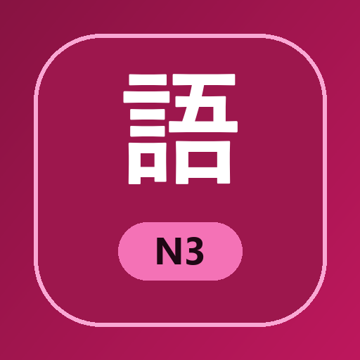

Langsung ke isi utama
語
Menyiapkan Buku N3…
N3 Tango 2000 · Edisi Indonesia

語
N3 Tango 2000
Edisi Bahasa Indonesia
Kembali ke Library
Nihongo no Mori
Pilih Chapter
Pilih Chapter...
Cari kata, furigana, nomor, atau arti
/
Furigana
Uji Hafalan
Kartu Kilat
Mode Kartu
Mode List
Memuat buku N3 Tango 2000...
Latihan Kartu Kilat
0 / 0
#001
Klik kartu atau tekan Spasi untuk melihat arti
Sebelumnya
Ulangi Lagi
Sudah Hafal
Berikutnya
Pengaturan Tampilan & Data
Bentuk Tampilan Kosakata
Pilih tampilan kartu lengkap atau list memanjang ke bawah.
Kartu
List
Mode Tampilan
Pilih mode warna yang paling nyaman di mata.
Light
Paper
Dark
Ukuran Huruf
Atur ukuran huruf Jepang dan terjemahan.
Kecil
Sedang
Besar
Mode Uji Hafalan (Lembar Merah)
Pilih bagian yang ditutup saat Mode Uji aktif.
Arti
Target
Semua
Cadangkan & Pulihkan Progres
Simpan daftar kata hafal dan tandai ke file JSON.
Unduh Progres
Impor
Pintasan Keyboard
/
Cari ·
F
Furigana ·
M
Mode Uji ·
[
/
]
Section Sebelum/Berikutnya
Cetak Halaman
Reset Progres Belajar
Hapus semua tanda hafal dan bookmark dari browser ini.
Reset